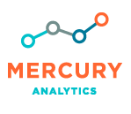
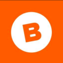

<!-- The circle icons use Font Awesome's stacked icon classes. For more information, visit http://fontawesome.io/examples/ -->
<section id="services" class="services">
  <div class="container">
    <div class="row text-center">
      <div class="col-lg-10 col-lg-offset-1">
        <div class="row">
          <div class="col-md-3 col-sm-6">
            <div class="service-item">
              
              <h4>
                <strong>Mercury Analytics</strong>
              </h4>
              <h4>Washington, DC</h4>
              <h5>Sep '15 - Present</h5>
              <p>I help clients user test their product offerings and optimize their ad campaigns by building RESTful APIs and applications to collect, analyze and visualize data.</p>
            </div>
          </div>
          <div class="col-md-3 col-sm-6">
            <div class="service-item">
              
              <h4><strong>The Wilson Center</strong></h4>
              <h4>Washington, DC</h4>
              <h5>Jun '15 - Sep '15</h5>
              <p>I conducted research on the regulatory in's and out's of using APIs to transform the work of Federal Agencies. I also published some articles on the use of <a class="no-decoration" href="https://stipcommunia.wordpress.com/2015/08/11/citizen-science-used-in-studying-seasonal-variation-in-india/" target="_blank">Citizen Science</a></p>
            </div>
          </div>
          <div class="col-md-3 col-sm-6">
            <div class="service-item">
              
              <h4><strong>Betchyu</strong></h4>
              <h4>Cleveland, Ohio</h4>
              <h5>Jun '14 - Aug '14</h5>
              <p><a class="no-decoration" href="https://www.crunchbase.com/organization/betchyu" target="_blank">A company no more</a>, I was part of the founding team leading the development of the Android Application. We thought we cracked the code on motivation by helping users achieve their wellness goals by inviting friends to bet against them.</p>
            </div>
          </div>
          <div class="col-md-3 col-sm-6">
            <div class="service-item">
              
              <h4><strong>Morgan Stanley </strong></h4>
              <h4>Bombay, India</h4>
              <h5>Jun '12 - Aug '12</h5>
              <p>I interned with the Asset Management Team under <a class="no-decoration" href="https://www.linkedin.com/in/amitava-neogi-94588522/" target="_blank">Amitava Neogi</a> and <a class="no-decoration" href="https://www.linkedin.com/in/partha-pratim-basu-37658117/" target="_blank">Partha Basu</a>. I wrote an algorithm that automates the creation of weekly equity advisory decks that go out to the Wealth Managers.</p>
            </div>
          </div>
        </div>
        <!-- /.row (nested) -->
      </div>
      <!-- /.col-lg-10 -->
    </div>
    <!-- /.row -->
  </div>
  <!-- /.container -->
</section>
